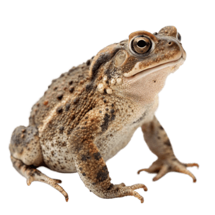

El sapo es un anfibio parecido a la rana, pero con piel más rugosa y seca.
Los sapos viven en zonas húmedas cerca de ríos, lagos y jardines.
Se alimentan principalmente de insectos y pequeños invertebrados.